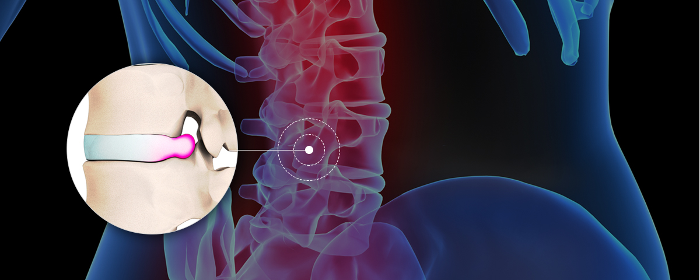
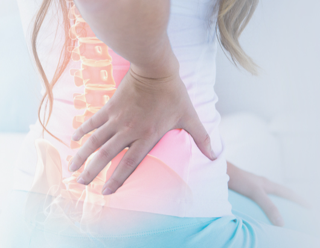
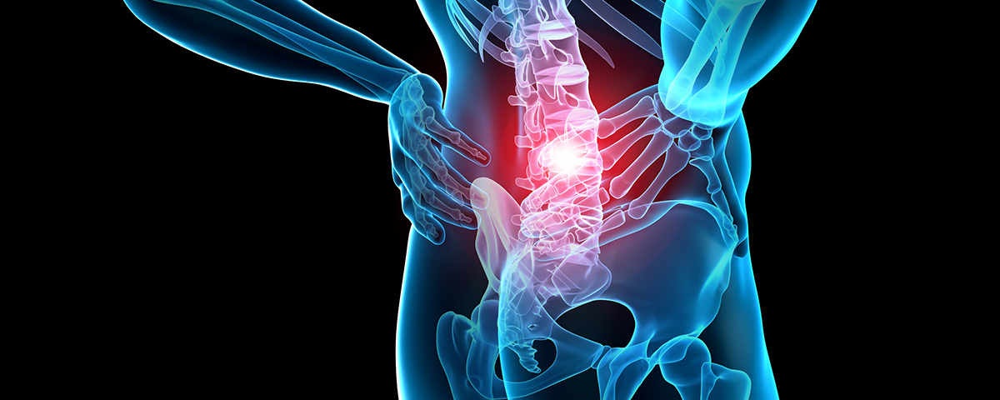
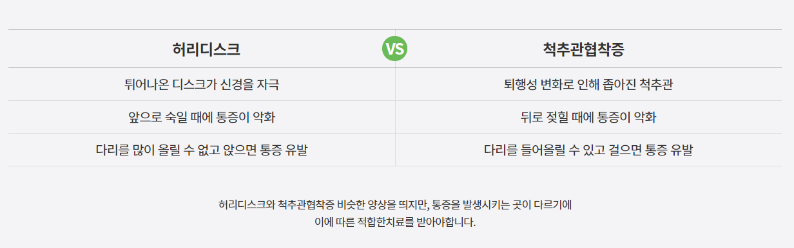
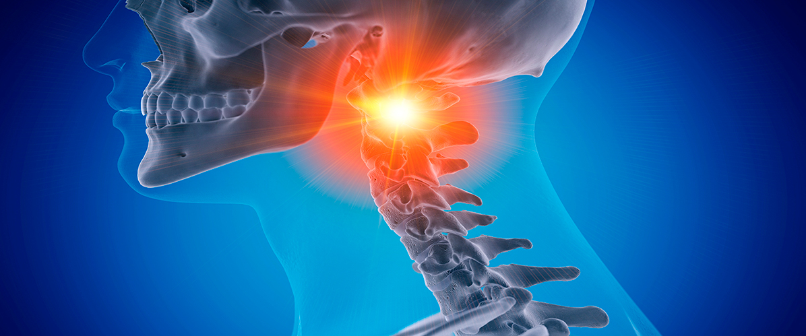
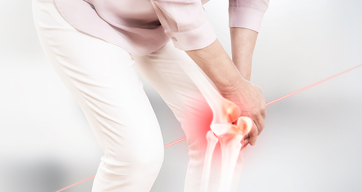
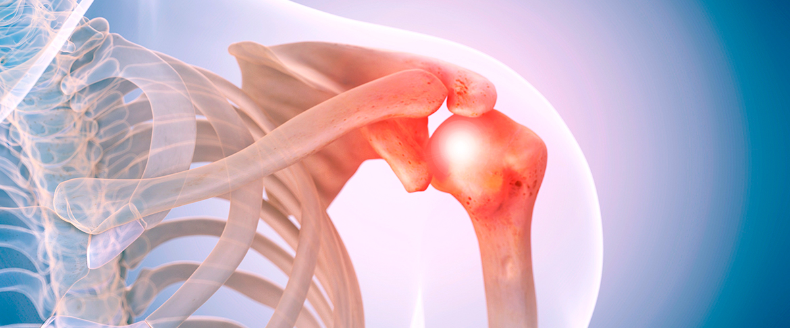
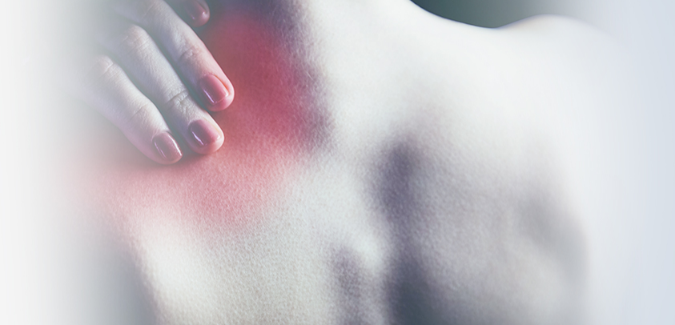

허리디스크, 협착
SONAMU KOREAN MEDICAL CLINIC
- HOME
- 척추관절통증클리닉
허리디스크, 협착
-
허리디스크
- 노인성 질환? 남녀노소 구분 없이 현대인에게 유병률이 높은 질환
-

정확한 질환명은 요추 추간판 탈출증이며, 척추 뼈와 뼈 사이의 연골 구조물 디스크
(추간판)가 잘못된 자세, 물리적인 충격, 퇴행성 변화 등으로 인해 튀어나오며
염증 유발 및 신경을 짓눌러 통증을 유발하는 병입니다. 디스크는 관절 운동에서
뼈와 뼈의 직접적인 부딪힘을 막아주고 외부에서의 물리적 충격을 완충하는 역할을
하므로 일상생활에서 지속적인 통증을 겪을 수 있고, 치료가 늦을 경우 수술이 필요할
수 있지만 초기 치료 시 보존적인 요법을 통해 치료할 수 있습니다.
- 허리디스크 원인
-
- 다리를 꼬고 앉거나, 허리를 비틀어 앉는 등 잘못된 자세 습관
- 무거운 물건을 들 때 급격한 충격
- 수면시 옆으로 눕거나, 엎드려 자는 자세
- 노화에 의한 디스크 퇴행
- 교통사고, 낙상 등 물리적 충격
- 전신 체형 틀어짐
-
증상 및 치료
- 증상
-

1. 허리를 쑤시는 것 같은 통증의 반복
2. 허리부터 골반, 다리까지 통증이 이어지고 때로는 저림
3. 편안한 자세로 휴식할 경우 통증이 호전되지만 잦은 재발 보임
4. 기침, 재채기를 할 때 통증 동반
5. 하체가 가늘어지고 근력 저하 발생
- 치료
-
- 허리디스크 초기에는 비교적 경미한 통증만 반복될 수 있고
- 병의 진행에 따라 허리부터 발가락까지의 통증(하지방사통),
- 하지 근력 및 감각 저하 등의 신경계 증상이 나타날 수 있으며
- 신경 손상이 심할 경우 대소변 기능, 성기능, 하지 마비로
- 이어질 수 있어 허리 통증에 대한 정확한 진단과 치료가 필요합니다.
-
협착증
- 협착증이란?
-

척추관과 신경근과 추간공이 기존보다 좁아지면서,
복합적인 신경증세를 발생시키는 질환으로
보통 퇴행성 변화가 시작되면서 발생하는 경우가 많습니다.
걷다 보면 쉬고 싶고 점점 허리가 굽어가면서 보행 장애를 초래할 수 있기에,
빨리 치료를 받는 것이 무엇보다 중요합니다.
- 증상
-
- 1. 오래 걷거나 뛰는 것이 힘듦
- 2. 엉덩이나 항문 쪽으로 찌르거나 쥐어짜는 듯한 통증
- 3. 통증이 심해졌다 나아졌다 반복하지만 악화되는 증상
- 4. 허리부터 다리까지의 극심한 통증과 더불어 하반신 마비
- 5. 등과 허리가 점점 앞으로 굽혀지는 현상

목디스크, 일자목
SONAMU KOREAN MEDICAL CLINIC
- HOME
- 척추관절통증클리닉
목디스크, 일자목
-
목디스크
- 성별과 나이를 막론하고 현대인에게 나타날 수 있는 흔한 질환
-

디스크는 척추뼈사이의 완충 역할을 하며 이 때 연골의 닳아 뼈끼리 부딪혀 손상되는 것을 목디스크라고 합니다. 추간판(디스크)은 외부의 충격을 흡수하므로 일상생활에서 지속적으로 통증을 호소할 수 있고, 적절한 시기에 치료를 하지 못할 경우에는 수술이 필요할 수 있지만 초기에 치료하면 비침습적인 방법으로 충분히 치료할 수 있습니다.
- 목디스크 원인
-
- 1. 스마트 기기 사용으로 인한 거북목의 증상
- 2. 컴퓨터를 사용할 때 목을 앞으로 빼는 습관이 있는 경우
- 3. 목에 무리한 힘이 들어가는 운동
- 4. 나의 체형에 맞지 않는 베개로 수면을 취할 때
- 지속적으로 오는 척수와 어깨 근육의 긴장
- 5. 나쁜 자세로 오랫동안 앉아서 공부 혹은 근무를 하는 경우
- 6. 사고나 물리적인 외부적인 힘에 의한 편타적 손상
-
목디스크 치료
- 목디스크 증상
-
1. 목에서 부터 시작해서 옆구리, 가슴의 통증까지 발생하는 상황
2. 손가락만 저릿한 통증이 오는 경우
3. 지속적인 두통 및 갑작스러운 두통의 반복
4. 어지럽고 현기증의 증상이 나타나며 신경계의 문제가 발생한 경우
5. 유기적으로 연결된 목부터 손가락까지 팔의 전체가 저리는 증상
- 목디스크 치료
-
- 목디스크는 초기에는 목의 통증으로 시작하지만 점점 시간이 지날 수록
어깨까지 통증이 이어질 수 있습니다. 또한, 병의 진행에 따라서 손가락까지
저릿한 김각계의 이상증세가 나타날 수 있고 심할 경우에는 머리로 향하는
혈액순환이 잘 되지 않고 척추신경압박하는 만성두통을 유발할 수 있습니다.
- 목디스크는 초기에는 목의 통증으로 시작하지만 점점 시간이 지날 수록
퇴행성관절염
SONAMU KOREAN MEDICAL CLINIC
- HOME
- 척추관절통증클리닉
퇴행성관절염
-
퇴행성관절염
- 꾸준한 관리가 필요한 무서운 질환
-
퇴행성관절염이란 관절을 보호하고 있는 연골의 손상이나 나이가 듦에 따라서
퇴행성 변화가 일어나면서 통증을 유발하는 질환 퇴행성관절염은 무릎을 포함하여
손가락, 관절, 척추 등 다양한 곳에서 발생할 수 있기에 주의가 필요합니다.
- 퇴행성관절염 원인
-
- 1. 고령화로 인해 50대 이상에게서 많이 발생
- 2. 교통사고 및 외부의 충격으로 인해 골절과 연골이 손상되어 발생
- 3. 비만으로 인한 관절이 지속적으로 좋지 못한 영향을 받아 발생
- 4. 손상된 연골의 방치하여 관절이 퇴행된 경우
- 5. 관절의 연골 재생 속도가 손상 속도를 따라 가지 못할 때
- 6. 나쁜 자세로 인해 반복적인 자극이 발생하는 경우
-
퇴행성관절염 치료
- 퇴행성관절염 증상
-

1. 무릎이 자주 욱씬 거리면서 시린 통증
2. 무릎 운동이 정상적이지 못해 무릎을 접고 피는 것에 대한 어려움
3. 무릎 주변 근육의 이상 증세로 인해서 부종이 생기며 불편함을 느끼는 경우
4. 계단 이용 시, 뻣뻣한 무릎으로 통증이 지속적으로 발생
5. 걷다가 멈췄을 때, 무릎의 힘이 저절로 빠지며 주저 앉을 것 같은 경우
- 퇴행성관절염 치료
-
- 퇴행성관절염는 초기에는 가벼운 통증이 반복될 수 있고, 질환의 경과에 따라서
고통이 심해질 경우에는 무릎이 부어서 움직이기 어려울 수 있습니다.
더욱 심한 경우에는 무릎에 물이 차오르면서 참을 수 없을 정도의 통증 증세를 보입니다.
더불어 걷는 것 자체에 어려워 질 수 있어 서둘러 정밀하게 치료하는 것이 중요합니다.
- 퇴행성관절염는 초기에는 가벼운 통증이 반복될 수 있고, 질환의 경과에 따라서
오십견
SONAMU KOREAN MEDICAL CLINIC
- HOME
- 척추관절통증클리닉
오십견
-
오십견
- 남녀노소 없이 관절 제한을 일으킬 수 있는 질환
-

오십견은 어깨의 관절낭이 통증 뿐만 아니라 어깨의 다양한 움직임을 제한하는
가장 흔한 질환입니다. 예전에는 50대에 많이 발병되는 질환 중 하나였지만
지금은 성별 관계 없이 다양한 연령층에서 발생할 수 있습니다.
이 질환의 특징은 만성적으로 어깨에 있는 관절의 자유롭게 움직이지 못하면서
어깨의 활동범위가 감소되어 불편함을 겪습니다.
- 오십견 원인
-
- 1. 노화에 따른 어깨 관절 주위 연부조직의 퇴행성 변화
- 2. 외부적인 충격 혹은 어깨관절의 부상
- 3. 스마트폰과 컴퓨터의 장시간 사용
- 4. 집안일 혹은 업무의 특성상 계속 반복적인 동작을 하는 경우
- 5. 옆으로 누워서 자는 습관으로 어깨가 자주 눌리는 경우
- 6. 당뇨병, 경추 질환 등 다른 질환의 영향으로 2차적인 통증이 나타나는 경우
-
오십견 치료
- 오십견 증상
-

1. 팔을 뒤로 젖히는 동작이 불편한 경우
2. 어깨의 통증으로 수면장애를 겪는 경우
3. 똑바르게 설 때 무릎과 무릎의 사이에 주먹 크기가 넣어질 정도로 벌어진 경우
4. 어깨의 주변이 뻣뻣하고 자유롭게 움직이지 못하는 경우
5. 팔이 굳어지는 듯한 느낌을 지속적으로 받는 경우
- 오십견 치료
-
- 오십견의 굳는 현상 때문에 ＇동결견’ 이라고도 일컫습니다.
오십견증상이 심해질 경우 일반적인 움직임 조차 어려울 정도로 움직이는 것에
제한이 되며 극심한 통증도 함께 동반됩니다.
경우에 따라서 치료의 적기를 놓치게 되면 후유증이 발생할 수 있어
빠르게 치료하는 것이 필요합니다.
- 오십견의 굳는 현상 때문에 ＇동결견’ 이라고도 일컫습니다.